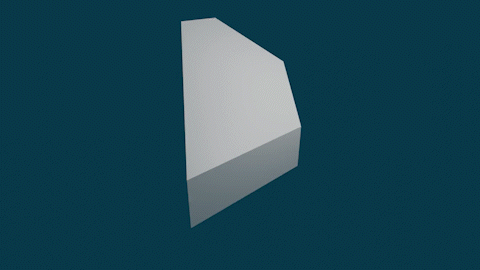

Associahedron
Jean-Louis Loday’s realisation of the (5-)associahedron:

The vertices are generated from planar binary trees using the algorithm described in Loday’s paper1 (Loday gives vertices in 4-space but they sit in a 3-dimsional hyperplane which I’ve projected onto ordinary 3-space). The surface was created and written to STL with the Trimesh Python library. Code.